1.適当な場所にソースを管理するフォルダを作成します
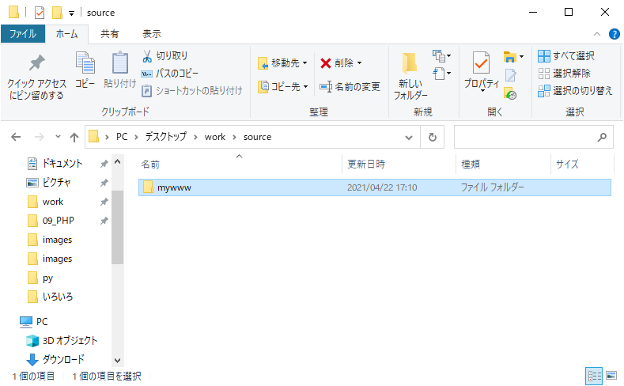2.作成したフォルダをVS Codeで開きます
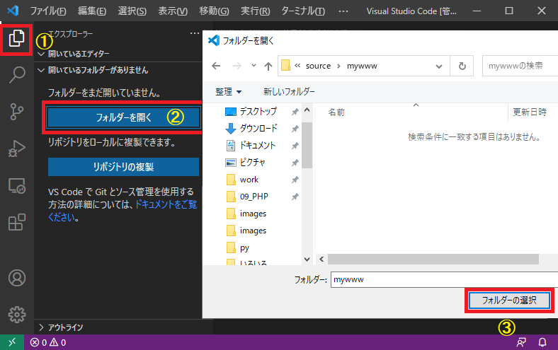3.リポジトリを作成（初期化）します
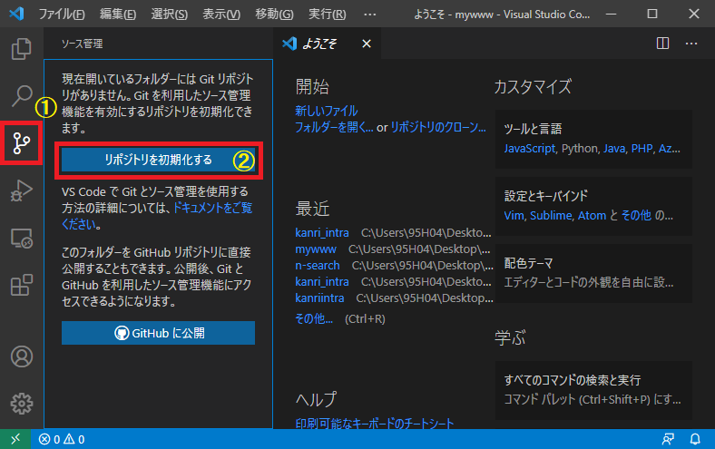4.ソースを作成（配置）します
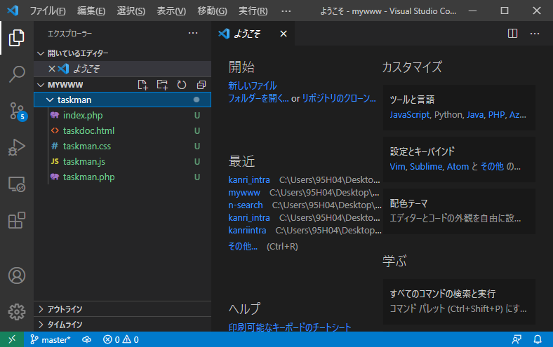5.Git Bucketにローカルリポジトリを作成する
※ローカルリポジトリが既にある場合は『6.リモートリポジトリの構成を追加する』へ
http://mywww.leopalace21.com:8080/を開き、『Sign in』からユーザー・パスワードとも『root』でログインします
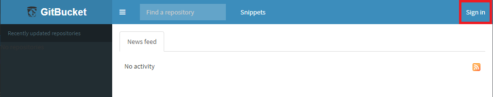ログイン完了後、追加ボタンより『New Repository』をクリックします
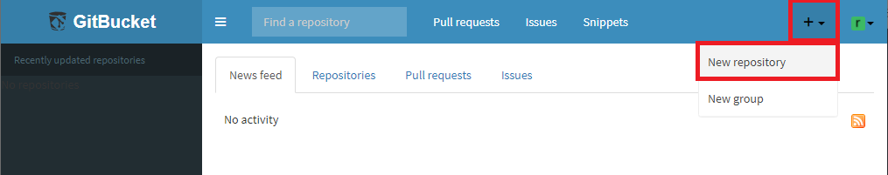『Repository name』にリポジトリ名を入れ『Create repository』をクリックします
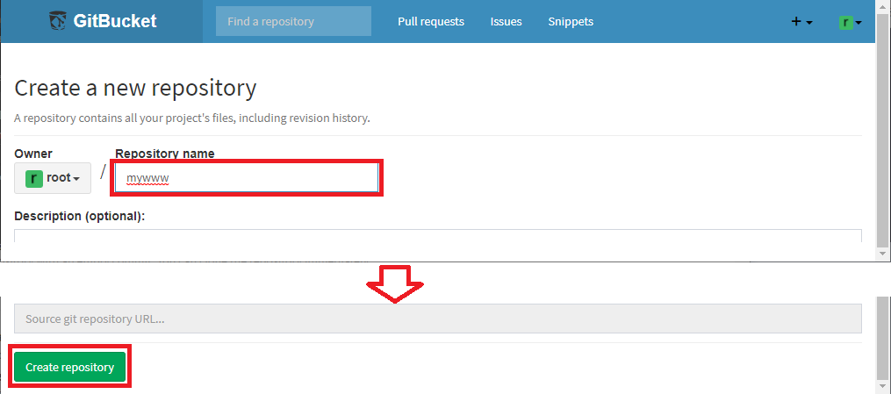リモートリポジトリが作成されました。
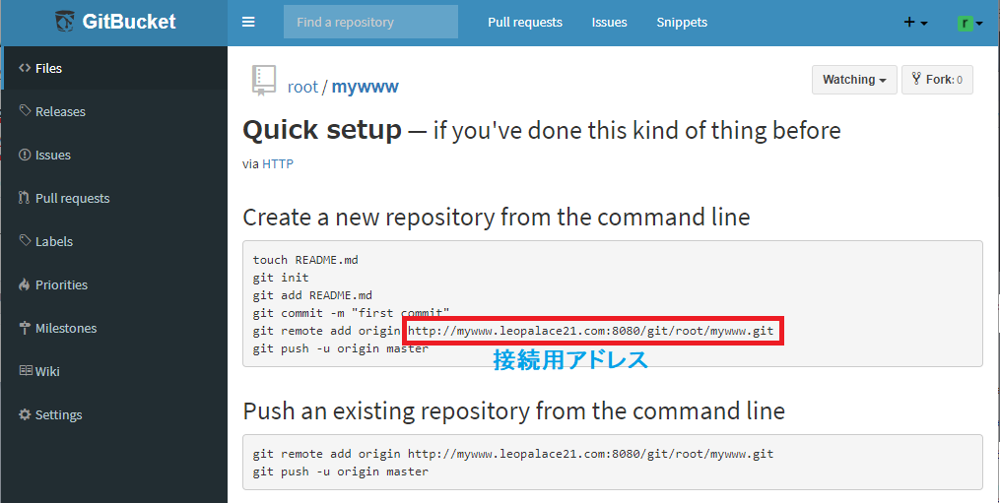6.リモートリポジトリの構成を追加する
VS Codeでメニューから『ターミナル => 新しいターミナル』又はCtrl+@で起動します
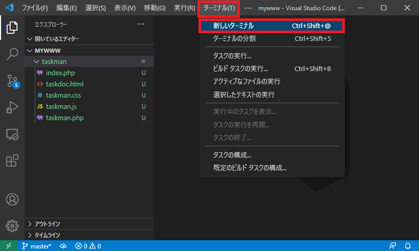ターミナルの選択から『New Git Bash』を選択します
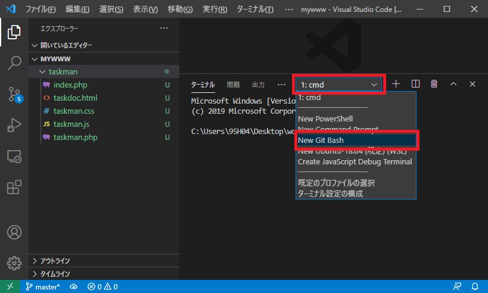コマンドにて『git remote add origin （5で作成した接続用アドレス）』を実行します
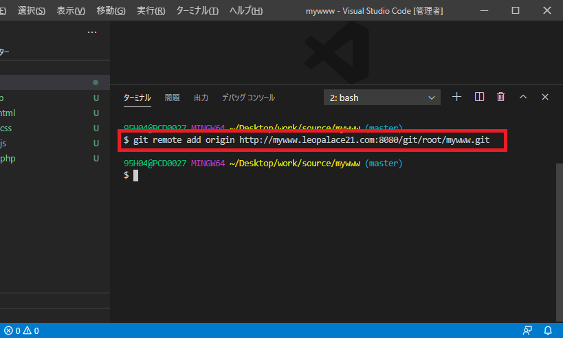7.ローカル内容をリモートリポジトリに反映させます（push）
先ほど配置したファイルをコミットしローカルリポジトリに反映させます
①gitを選択 ②メッセージを入力し ③コミットをクリックします
直接配置で変更していないので警告メッセージが表示されますが、そのまま『はい』をクリック
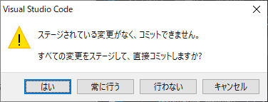gitの拡張メニューから『push』を選択します

Git Bucketの『Files』をクリックでリモートリポジトリに反映されたことが確認できます
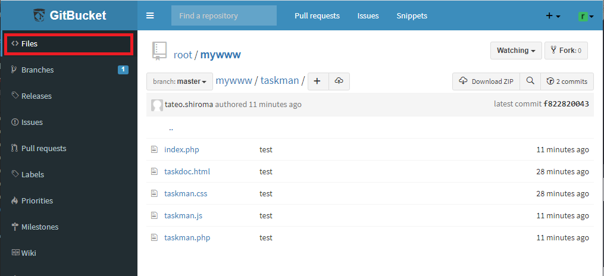